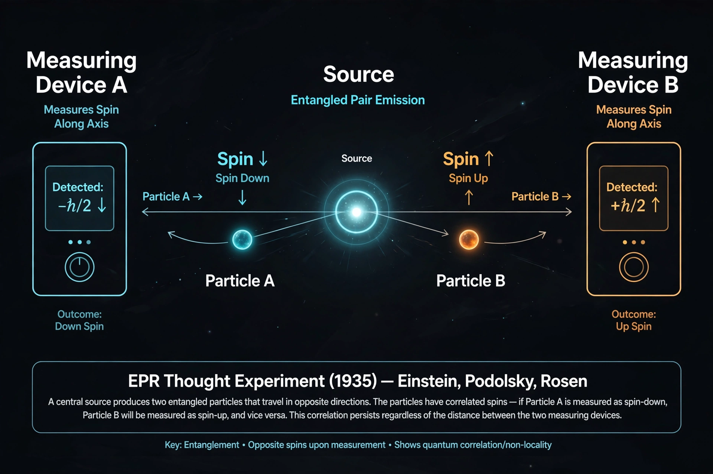

EPR paradox
| Published | 1935, Einstein, Podolsky, Rosen (Physical Review 47, 777) |
|---|---|
| Claim | Quantum mechanics is incomplete |
| Resolution path | Bell's theorem and Bell test experiments |

[Image: Diagram of the EPR thought experiment: two particles flying apart from a common source]The Einstein–Podolsky–Rosen paradox (EPR paradox) is a thought experiment proposed by physicists Albert Einstein, Boris Podolsky and Nathan Rosen in 1935, arguing that the description of reality provided by quantum mechanics is incomplete. Their paper, 'Can Quantum-Mechanical Description of Physical Reality be Considered Complete?', argued that if quantum mechanics were complete, it would imply 'spooky action at a distance' — and concluded instead that unmeasured properties ('elements of reality', later hidden variables) must exist.
Niels Bohr replied that the two particles form a single indivisible system until measured. The debate remained philosophical until John Stewart Bell showed in 1964 (Bell's theorem) that local hidden-variable theories make predictions differing from quantum mechanics — and experiments, from Freedman–Clauser (1972) and Aspect (1982) to the loophole-free tests of 2015, have vindicated quantum mechanics. The EPR correlations, far from being a paradox to be removed, became the phenomenon of Quantum entanglement — now a working resource.
The argument
EPR considered two particles prepared so that position and momentum are perfectly correlated. Measuring the position of one lets one predict the other's position with certainty; measuring momentum instead likewise reveals the other's momentum. If neither measurement can disturb the distant particle (locality), both its position and momentum must be definite beforehand — but quantum mechanics forbids simultaneous definite values (the Uncertainty principle), so the theory's description must be incomplete. Erwin Schrödinger's response introduced the term 'entanglement' and his famous cat. Einstein's own preferred version used spin (the Bohm spin-singlet formulation), which is the form tested experimentally.